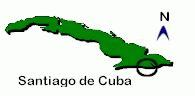

Bienvenidos a nuestra página Web. Aquí podrás encontrar información sobre nosotros, nuestra historia y vida actual.
|
|
| Bienvenidos a nuestra página Web. Aquí podrás encontrar información sobre nosotros, nuestra historia y vida actual. |

 |
Como establecer contacto | |
| Teléfono | (53) (226) 86180 | |
| Fax | (53) (226) 23768 | |
| Correo | Corona 273 e/ Habana y Los Maceo Santiago de Cuba 90100 Cuba | |

| Página Principal | Historia de la Comunidad | Sinagoga de Hoy| Eventos Importantes |
| Comunidad Hebrea Cuba |

Comunidad Hebrea Hatikva
(c) 1998
Diseñado por
JorgeRivero Behar